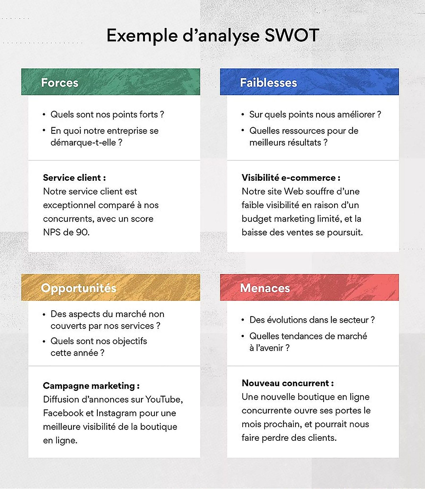

1entreprise fictive créée
12mois simulés
2documents financiers produits
Le contexte et la commande
- Deuxième SAE du semestre 1 : créer une entreprise fictive et simuler son activité sur une année complète.
- Projet BIONATURE, construit collectivement, de l’idée à la présentation des comptes.
- Objectif pédagogique : comprendre comment une décision de gestion se traduit dans les documents comptables.
La problématique
Comment passer d’une idée d’entreprise à des documents financiers prévisionnels cohérents, et identifier les risques auxquels cette activité serait exposée ?
Le travail réalisé
- Création de l’entreprise fictive BIONATURE et simulation de son activité sur une année complète.
- Tri des coûts, des revenus générés et des montants engagés afin de construire un bilan cohérent.
- Élaboration d’un compte de résultat et d’un bilan prévisionnels, à partir de la structure de coûts de l’entreprise et d’une estimation du prix de certains produits.
- Diagnostic interne et externe de l’environnement de l’entreprise, regroupé dans une matrice SWOT.


Ce que j’en retire
- La capacité à rechercher, collecter et traiter des données brutes pour produire une information structurée, puis à en tirer des raisonnements financiers.
- L’identification des risques d’une activité : forces, faiblesses, opportunités et menaces.
- Un point de vigilance identifié : la précision des libellés comptables et la conformité des documents à la réalité de l’exercice.

Ce que j’ai produit
- Structure de coûts complète : charges fixes, charges variables, investissements de départ.
- Compte de résultat et bilan prévisionnels sur douze mois, cohérents entre eux.
- Diagnostic interne et externe de l’activité, synthétisé dans une matrice SWOT.
- Estimation du prix de vente des produits et vérification de la viabilité de l’activité.
Ce que j’en retire
- Rechercher, trier et catégoriser des données brutes pour produire une information structurée et exploitable.
- Identifier les risques d’une activité avant son lancement.
- Un point de vigilance repéré : la précision des libellés comptables et la conformité des documents à la réalité de l’exercice.
Outils et méthodes mobilisés
Compte de résultatBilan prévisionnelMatrice SWOTExcel